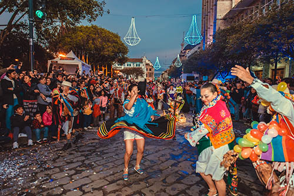

Cultura:
Cuenca es una de las ciudades cunas de la cultura en el pais .Esta ciudad es llamada "Cuenca de los Andes" o la
"Atenas del Ecuador" ,por ser la tierra de artistas o personalidades como :Miguel Velez,Gaspar Sangurima,Remigio
Crespo Toral,Abdon Calderon,entre otros.
 CIDAP
El CIDAP es un centro de artesanias y y arte en general ,que se creo con el proposito de preservar la cultura latinoamericana y como
un tratado entre los paises que integran la OEA.
CIDAP
El CIDAP es un centro de artesanias y y arte en general ,que se creo con el proposito de preservar la cultura latinoamericana y como
un tratado entre los paises que integran la OEA.
Santos Inocentes:
Se celebra el 6 de enero de todos los años.Esta fiesta en sus comienzos era religiosa ,con el pasar de los años
se fueron incorporando cosas no tan reliosas,y todos lo celebran.Se hacen comparsas ,defiles y se premian los mismos.
Carnaval de Cuenca:
El carnaval es un momento en Cuenca que todos aprovechan para reunirse con su familia y disfrutar de unos platos tipicos
de la ciudad como el chancho ,el cuy .Tambien se eligen los compadres y comadres.

Corpus Christi:
El Corpus es una de las fiestas mas famosas que se celebran en la ciudad.La sede se encuentra en el parque "Abdon Calderon"
,donde se llena de puestos de muchas fabricantes de dulces,que durante una semana alegran la vida del cuencano y foraneo
en la ciudad.
Pase del niño viajero:
Esta tradiccion manifiesta la cultura y las creencias.Celebran el nacimiento al niño Dios.Las personas se disfrazan con
ropa elegante (especialmente hecha a bordados).Los cuencanos van voluntariamente a esta celebracion con sus familias.